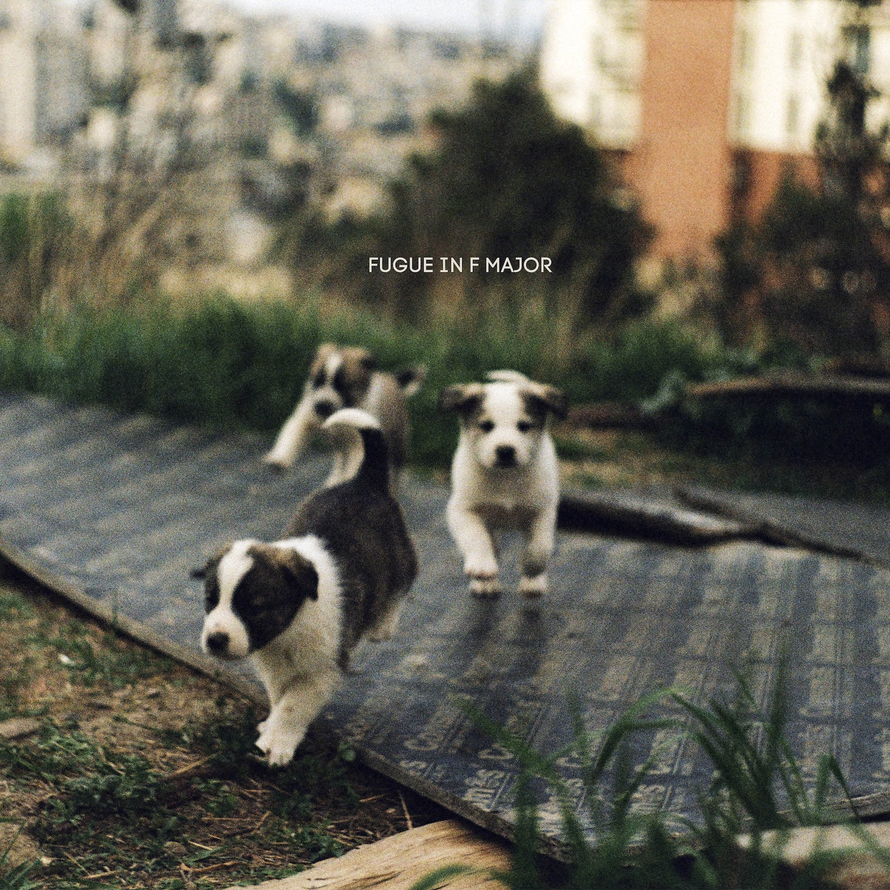

2025
Fugue in F major explores repetition, drift and gradual transformation. Built from live modular improvisation and environmental signals emerging in real time, the piece evolves through accumulation, timing and unstable detail.
Fugue in F major originated as a live stream performance.
The performance developed through real-time interaction between modular synthesizers, live environmental signals and slowly evolving rhythmic structures.
Fragments emerge, disappear and return transformed. Repetition functions not as a loop, but as movement through time.
The work explores accumulation, improvisation and the unstable relationship between structure and chance.
Recorded live.
Later assembled and released as an album.